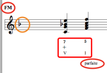

Tonal Display
Tonal display options concern all musical objects with possible tonal harmonic or melodic progressions : chord-seqs, multi-seqs, voices and polys .
Tonality
The |  |
To choose a tonality
select the editor and press
t.A tonality dialogue window pops up.
Select the
MinororMajormode in the pop up menu, and a key signature via the<and>buttons.The tonality is indicated on the upper left corner of the editor, as well as a conventional key signature.
To restore the original "atonal" configuration, press SHIFT + t .

OM automatically assigns the expected accidentals, depending on the chosen tonality. Accidentals can though be modified enharmonically. To modify an accidental :
|  |
Editor Scale
The default accidental notation system in score editors uses sharps. This system can be modified, to a certain extent.
 | The This especially makes sense when using a tonal or modal semitones scale pattern. To specify a scale
|
To assign an enharmonic accidental to a note, Ctrl / right click on it and select a menu item.

Modifications of the default scale are displayed by the dialogue window. Click on |  |
Cadences, Degrees and Figuring
 | An elementary tonal analysis tool is implemented in musical editors. It is based on the options provided in the
The analysis takes place as chords are being edited, provided OM can recognize a listed chord and chord progression. |
Modulation
Modulations can be specified textually in the score editor.
|  |
 | OM displays the modulation but it doesn't automatically adapt the key signature or accidentals to the new tonality. |